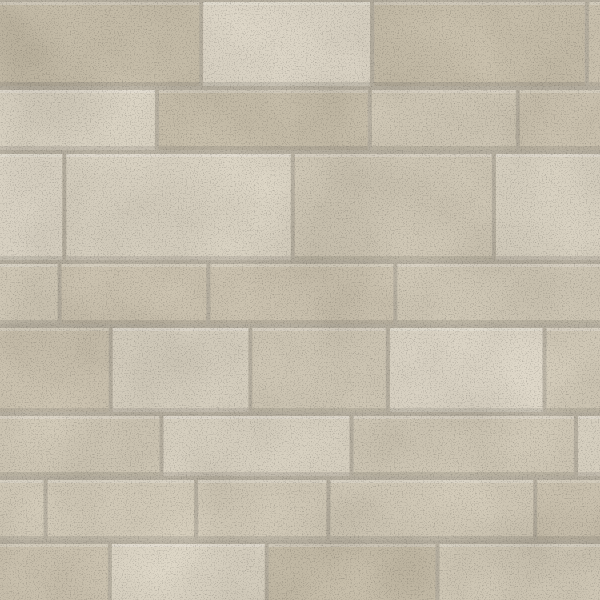
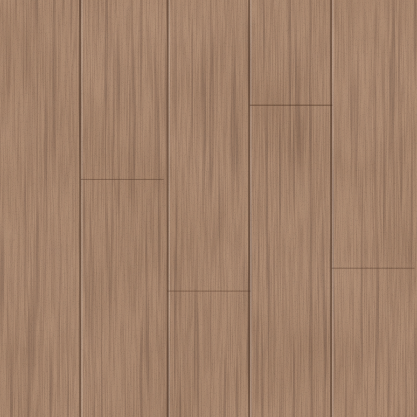

The home
drawn around the view
A hillside home in planning, its rooms arranged around a single long view to the south.
- Size
- 3,200 ft²
- Build
- 14 months, planned
- Status
- In planning
- Project
- Pre-construction
An illustrative home. Its story shows the kind of work we do.
The arrival
A walled courtyard that keeps the view hidden until you step inside.
Living room
One long window, framing the ridge line to the south.
The challenges
What we’re solving now.
- Problem
A view to the south, and the summer sun that comes with it.
SolutionDeep roof overhangs, set from a sun study, shade the glass in summer and let the winter sun in.
- Problem
A long, steep drive for construction traffic.
SolutionA delivery plan agreed with the neighbours keeps loads small and off the lane at school times.
Kitchen
Set to catch the morning sun, with a door straight onto the herb garden.
The terrace
A stone terrace that stops where the meadow begins.
The plan · 14 months
The plan
Photograph to come The site Photograph to come Survey day Photograph to come Model review Photograph to come Samples
Pre-construction under way · Build planned for 10 months · Price fixed once the drawings are complete
“We came with a view and a list of wishes. Every drawing since has made both clearer.”
- Best part so far
- The sun study.
- Surprised by
- A fixed fee, credited back.
- Next step
- Signing the contract.
Materials
Stone · Cedar · Steel

StoneLocal stone for the base and terraces.
CedarCladding and soffits.- SteelWindow frames and balustrades.